Omschrijving van de Portfolio Website
Deze portfolio website is ontworpen om mijzelf te introduceren en mijn projecten te tonen.
Het doel is om een professionele website te creëren waarmee werkgevers of klanten mijn werk kunnen bekijken.
Inspiratie
Kleurschema
- Page Text Color: White (#FFFFFF)
- Header and Footer: Black (#000000)
- Page Background Color: Donker Blauw (#141922)
- Nav Item Inactive Text Color: Gray (#808080)
- Nav Item Hover Background Color: Rood (#E42422)
- Nav Item Active Background Color: Donker Rood (#ad2e32)
Sitemap
